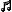
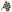
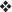
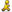
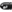
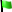
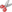
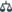
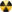

im Titel einer
Schlüsselwortdefinition kennzeichnet, daß dieses Schlüsselwort eine
Erweiterung ist, also nicht zum CQL-Standard gehört.
im Titel einer
Schlüsselwortdefinition kennzeichnet, daß dieses Schlüsselwort eine
Erweiterung ist, also nicht zum CQL-Standard gehört.
Jedes CQL-Skript muß auf oberster Ebene genau eine Suchliste haben. Die Suchliste beinhaltet Schlüsselwortparameter, die die Suche nach Partien kontrollieren. Die Suchliste enhält Null oder mehr Positionslisten. (Der CQL-Standard fordert mindestens eine Positionsliste.) Eine Partie wird nur dann gefiltert (aufgefunden), wenn alle Bedingungen in der Suchliste erfüllt wurden. Wenn Positionslisten existieren, dann muß jede von ihnen mindestens eine Position in der Partile filtern (auffinden), damit die Partie von der Suchliste gefiltert wird. Scidb erlaubt eine zusätzliche Besonderheit: die Suchliste kann logische Schlüsselwörter (:and, :or, :not) mit weiteren Suchlisten enthalten.
Viele Beispiele auf dieser Seite sind nicht konform zum CQL-Standard, denn er fordert mindestens eine enthaltene Positionsliste.
Das Symbol im Titel einer
Schlüsselwortdefinition kennzeichnet, daß dieses Schlüsselwort eine
Erweiterung ist, also nicht zum CQL-Standard gehört.
(und)Erwartet eine Liste von Untersuchlisten und filtert nur dann eine Partie, wenn jede von ihnen diese Partie filtert. Eine Untersuchliste kann keine Positionslisten enthalten.
Beispiel:
(match
:and (
(match :isshufflechess)
(match :ischess960 :not))))Suche nach Shuffle-Schach-Partien, die keine Schach-960-Partien sind. Dieses Beispiel ist identisch zu:
(match :isshufflechess (match :ischess960 :not))Tatsächlich ist dieses Schlüsselwort entbehrlich, aber der Vollständigkeit wegen enthalten.
(nicht)Dieses Schlüsselwort kann in zwei Formen angewandt werden: entweder ist es in einer Suchliste enthalten, oder es hat eine Untersuchliste als Parameter. Im ersten Fall filtert dieses Schlüsselwort, wenn die Suchliste ohne dieses Schlüsselwort nicht filtern würde. Im zweiten Fall: das Resultat der Untersuchliste wird negiert. Die erste Form wurde definiert, um mit dem CQL-Standard des Schlüsselwortes :not der Positionsliste konform zu sein.
Beispiel:
(match :isshufflechess :not)
Suche nach Partien, die nicht mit einer Shuffle-Schach-Position starten. Dieses Beispiel kann klarer mit der zweiten Form formuliert werden:
(match :not (match :isshufflechess))
(oder)Erwartet eine Liste von Untersuchlisten und filtert nur dann, wenn mindestens eine von ihnen filtert. Eine Untersuchliste kann keine Positionslisten enthalten.
Beispiel:
Suche nach Weltmeisterschaftspartien.
(Turnier)Suche nach Partien deren Turnierbezeichnung mit dem gegebenen Suchmuster übereinstimmt.
Ein Parameter wird erwartet, entweder ein Suchmuster in doppelten Anführungszeichen, oder eine einfache Zeichenkette. Siehe :player für eine detaillierte Beschreibung.
(Turnieraustragungsland)
Filtere alle Partien, deren Turnieraustragungsland mit einem der in
der kommaseparierten Liste gegebenen Ländercodes übereinstimmt.
Ein Ländercode ist entweder ein
IOC-Ländercode ,
oder ein ISO 3166-2-Ländercode .
Weiterhin sind die speziellen Ländercodes UNK (IOC-Form) und
xx (ISO 3166-2-Form) erlaubt, die Partien filtern deren
Turnieraustragungsland unbekannt ist.
Beispiele:
:eventcountry dk,fi,no,se
Suche nach Partien, die im Skandinavischen Raum gespielt wurden.
:eventcountry xx
Suche nach Partien, deren Turnieraustragungsland nicht bekannt ist.
Siehe auch: :site.
(Turnierdatum)Dies erwartet eine Angabe für den Datumsbereich, im dem das Turnierdatum liegen soll.
Für eine detaillierte Beschreibung des Datumsbereich siehe :date.
(Turniermodus)Filtere alle Partien, deren Turniermodus mit einem der Modi in der gegebenen kommaseparierten Liste übereinstimmt.
Der Eventmodus ist eine der folgenden Modi:
unknown |
Turniermodus ist unbekannt | |
otb |
 |
Am Brett |
corr |
Fernschach | |
email |
||
internet |
Internet-Schachservice | |
tele |
Telekommunikation | |
analysis |
Analyse | |
composition |
 | Komposition |
Beispiel:
:eventmode corr,email
Suche nach Fernpartien, oder nach via Email gespielten Partien.
(Turniertyp)Filtere alle Partien, deren Turniertyp mit einem der in der gegebenen kommaseparierten Liste von Turniertypen übereinstimmt.
Der Turniertyp ist einer der folgenden Typen:
unknown |
Turniertyp ist unbekannt | |
game |
Freie Partie | |
match |
 | Wettkampf |
tourn |
Rundenturnier | |
knockout |
K.O.-Turnier | |
swiss |
Schweizer System-Turnier | |
team |
Mannschaftsturnier | |
schev |
Scheveninger System-Turnier | |
simul |
 | Simultanturnier |
Beispiel:
:eventtype tourn,swiss
(Turnierort)Suche nach Partien, deren Turnierort mit dem gegebenen Suchmuster übereinstimmt.
Ein Parameter wird erwartet, entweder ein Suchmuster in doppelten Anführungszeichen, oder eine einfache Zeichenkette. Siehe :player für eine detaillierte Beschreibung.
Siehe auch: :eventcountry.
(Zeitmodus)Suche nach Partien, deren Zeitmodus mit einem der in der gegebenen kommaseparierten Liste von Zeitmodi übereinstimmt.
Der Zeitmodus ist einer der folgenden Modi:
unknown |
Zeitmodus ist unbekannt | |
normal |
Normalschach | |
rapid |
 | Schnellschach |
blitz |
Blitzschach | |
bullet |
 | Bullet |
corr |
Fernschach |
Beispiel:
:timemode blitz,bullet
Suche nach Blitz- bzw. Bullet-Partien.
(Geburtsjahr)Suche nach Partien, in denen einer der Spieler innerhalb der gegebenen Bereichsangabe geboren wurde.
Beispiel:
:birthyear 1990 unlimited
Suche nach Partien mit mindestens einem jüngeren Spieler, geboren 1990 oder später.
Siehe auch: :whitebirthyear, :blackbirthyear, :deathyear.
(Geburtsjahr - schwarzer Spieler)Suche nach Partien, in denen der schwarze Spieler innerhalb der gegebenen Bereichsangabe geboren wurde.
Siehe auch: :whitebirthyear, :birthyear, :blackdeathyear, :whitedeathyear, :deathyear.
(Land - schwarzer Spieler)
Filtere alle Partien, in denen die Nationalität des schwarzen Spielers mit einem
der Ländercodes in der gegebenen kommaseparierten Liste von Ländercodes
übereinstimmt.
Ein Ländercode ist entweder ein
IOC-Ländercode ,
oder ein ISO 3166-2-Ländercode .
Weiterhin sind die speziellen Ländercodes UNK (IOC-Form) und
xx (ISO 3166-2-Form) erlaubt, die Partien filtern deren
Turnieraustragungsland unbekannt ist.
Für Beispiele siehe :country.
Siehe auch: :country, :whitecountry.
(Todesjahr - schwarzer Spieler)Suche nach Partien, in denen der schwarze Spieler innnerhalb der gegebenen Bereichsangabe verstarb.
Siehe auch: :whitedeathyear, :deathyear, :blackbirthyear, :whitebirthyear, :birthyear.
(Geschlecht - schwarzer Spieler)
Filtere alle Partien, in denen das Geschlecht des schwarzer Spielers mit dem
gegebenen Geschlecht übereinstimmt. Die Geschlechtsangabe ist: f
(feminin), m (masculin, männlich), oder x (unbekannt).
Anstatt f (feminin) kann auch w (weiblich) verwendet
werden.
Beispiel:
:blackgender f
Suche nur nach Partien mit mindestens einem weiblichen Spieler.
:blackgender x
Suche nach Partien, in denen bei einem Spieler das Geschlecht nicht bekannt ist.
Siehe auch: :whitegender, :gender.
(Computer? - schwarzer Spieler)Suche nach Partien, in denen der schwarze Spieler ein Schachcomputer ist.
Siehe auch: :iscomputer, :whiteiscomputer.
(Menschlich? - schwarzer Spieler)Suche nach Partien, in denen der schwarze Spieler ein Mensch ist.
Siehe auch: :ishuman, :whiteishuman.
(Schwarzer Spieler)Suche nach Partien, in denen der schwarze Spielername mit dem gegebenen Muster übereinstimmt.
Ein Parameter wird erwartet, entweder ein Suchmuster in doppelten Anführungszeichen, oder eine einfache Zeichenkette. Siehe :player für eine detaillierte Beschreibung.
Siehe auch: :player, :whiteplayer.
(Wertungszahl - schwarzer Spieler)Suche alle Partien, in denen die Wertungszahl des schwarzen Spielers für den gegebenen Wertungstyp innerhalb der gegebenen Bereichsangabe liegt. Für eine detaillierte Beschreibung siehe :rating.
Siehe auch: :whiterating, :rating.
(Titel - schwarzer Spieler)Suche alle Partien, in denen der Titel des schwarzen Spielers mit einem in der gegebenen kommaseparierten Liste von Titeln übereinstimmt. Siehe :title für eine detailliertere Beschreibung.
Siehe auch: :whitetitle, :title.
(Land)
Filtere alle Partien, in denen die Nationalität eines Spielers mit einem
der Ländercodes in der gegebenen kommaseparierten Liste von Ländercodes
übereinstimmt.
Ein Ländercode ist entweder ein
IOC-Ländercode ,
oder ein ISO 3166-2-Ländercode .
Weiterhin sind die speziellen Ländercodes UNK (IOC-Form) und
xx (ISO 3166-2-Form) erlaubt, die Partien filtern deren
Turnieraustragungsland unbekannt ist.
Beispiele:
:country GER
:country de
In beiden Beispielen werden all Partien gefiltert, in denen einer der Spieler ein Deutscher ist.
Siehe auch: :whitecountry, :blackcountry.
(Todesjahr)Suche nach Partien, in denen einer der Spieler innnerhalb der gegebenen Bereichsangabe verstarb.
Beispiel:
:deathyear 1800 1950
Scuhe nach Partien mit Spielern aus alter Zeit, mindestens einer der Spieler vestarb zwischen 1800 und 1950.
Siehe auch: :whitedeathyear, :blackdeathyear, :whitebirthyear, :blackbirthyear, :birthyear.
(Geschlecht)
Filtere alle Partien, in denen das Geschlecht einer der Spieler mit dem
gegebenen Geschlecht übereinstimmt. Die Geschlechtsangabe ist: f
(feminin), m (masculin, männlich), oder x (unbekannt).
Anstatt f (feminin) kann auch w (weiblich) verwendet
werden.
Für Beispiele siehe :blackgender.
Siehe auch: :blackgender, :whitegender.
(Computer?)Suche nach Partien, in denen einer der Spieler ein Schachcomputer ist.
Siehe auch: :whiteiscomputer, :blackiscomputer.
(Ein Mensch?)Suche nach Partien, in denen einer der Spieler ein Mensch ist.
Siehe auch: :whiteishuman, :blackishuman.
Suche nach Partien, in denen der schwarze Spielername mit dem gegebenen Muster übereinstimmt. Ein Parameter wird erwartet, entweder ein Suchmuster in doppelten Anführungszeichen, oder eine einfache Zeichenkette.
Einfache Zeichenkette: Nur Partien, in denen mindestens einer der Spielernamen eine Teilzeichenkette des Parameters ist, werden gefiltert. Der Zeichenkettenvergleich ist unabhängig von Groß- und Kleinschreibung. Diese Form entspricht dem CQL-Standard.
Beispiel:
:player coeff
Filtere alle Partien, in denen einer der Spielernamen eine Teilzeichenkette "coeff" enthält.
Suchmuster in doppelten Anführungszeichen: Nur Partien, in denen mindestens einer der Spielernamen durch das Suchmuster ersetzt weren kann, werden aufgefunden. Für eine Beschreibung der Suchmuster siehe Suchmusterabgleich.
 Die Form mit den Suchmustern in doppelten Anführungszeichen entspricht
nicht dem CQL-Standard.
Die Form mit den Suchmustern in doppelten Anführungszeichen entspricht
nicht dem CQL-Standard.
Beispiele:
:player "*coeff*"
Dies ist identisch zu ":player coeff".
Für weitere Beispiele siehe Suchmusterabgleich.
Siehe auch: :whiteplayer, :blackplayer.
(Wertungszahl)Suche alle Partien, in denen die Wertungszahl einer der Spielers für den gegebenen Wertungstyp innerhalb der gegebenen Bereichsangabe liegt.
Der Wertungstyp ist einer der folgenden Typen:
ELO |
FIDE Rating |
DWZ |
Deutsche Wertungszahl |
ECF |
Englischer Schachverband |
Rapid |
Schnellturnierwertung des englischen Schachvernbands |
ICCF |
Internationaler Fernschachverband |
USCF |
Schachverband der USA |
IPS |
Schach-960-Wertung (Individual Player Strength) |
Other |
Jeder andere Wertungstyp |
Beispiel:
:rating ELO 2000 3000
Filtere alle Partien, in denen einer der Spieler eine ELO-Wertung zwischen 2000 und 3000 besitzt.
Siehe auch: :whiterating, :blackrating.
(Titel)Suche alle Partien, in denen der Titel einer der Spieler mit einem in der gegebenen kommaseparierten Liste von Titeln übereinstimmt. Ein Titel ist einer der folgenden:
None | Kein Titel |
GM | Großmeister (FIDE) |
IM | Internationaler Meister (FIDE) |
FM | Fidemeister (FIDE) |
CM | Meisterkandidat (FIDE) |
WGM | Frauen - Großmeisterin (FIDE) |
WIM | Frauen - Internationale Meisterin (FIDE) |
WFM | Frauen - Fidemeisterin (FIDE) |
WCM | Frauen - Meisterkandidatin (FIDE) |
HGM | Ehrengroßmeister (FIDE) |
CGM | Fernschach-Großmeister (ICCF) |
CIM | Internationaler Fernschachmeister (ICCF) |
CLGM | Frauen - Fernschachgroßmeisterin (ICCF) |
CILM | Frauen - Internationale Fernschachmeisterin (ICCF) |
CSIM | Verdienter Internationaler Fernschachmeister (ICCF) |
Beispiele:
:title GM,IM
Suche alle Partien mit mindestens einem GM oder IM.
:title None
Suche alle Partien, in denen keiner der Spieler einen Titel besitzt.
(Geburtsjahr - weißer Spieler)Suche nach Partien, in denen der weiße Spieler innerhalb der gegebenen Bereichsangabe geboren wurde.
Siehe auch: :blackbirthyear, :birthyear, :whitedeathyear, :blackdeathyear, :deathyear.
(Land - weißer Spieler)
Filtere alle Partien, in denen die Nationalität des weißen Spielers mit einem
der Ländercodes in der gegebenen kommaseparierten Liste von Ländercodes
übereinstimmt.
Ein Ländercode ist entweder ein
IOC-Ländercode ,
oder ein ISO 3166-2-Ländercode .
Weiterhin sind die speziellen Ländercodes UNK (IOC-Form) und
xx (ISO 3166-2-Form) erlaubt, die Partien filtern deren
Turnieraustragungsland unbekannt ist.
Für Beispiele siehe :country.
Siehe auch: :blackcountry, :country.
(Todesjahr - weißer Spieler)Suche nach Partien, in denen der weiße Spieler innnerhalb der gegebenen Bereichsangabe verstarb.
Siehe auch: :blackdeathyear, :deathyear, :whitebirthyear, :blackbirthyear, :birthyear.
(Geschlecht - weißer Spieler)
Filtere alle Partien, in denen das Geschlecht des weißen Spielers mit dem
gegebenen Geschlecht übereinstimmt. Die Geschlechtsangabe ist: f
(feminin), m (masculin, männlich), oder x (unbekannt).
Anstatt f (feminin) kann auch w (weiblich) verwendet
werden.
Für Beispiele siehe :blackgender.
Siehe auch: :blackgender, :gender.
(Computer? - weißer Spieler)Suche nach Partien, in denen der weiße Spieler ein Schachcomputer ist.
Siehe auch: :iscomputer, :blackiscomputer.
(Menschlich? - weißer Spieler)Suche nach Partien, in denen der weiße Spieler ein Mensch ist.
Siehe auch: :ishuman, :blackishuman.
(Weißer Spieler)Suche nach Partien, in denen der weiße Spielername mit dem gegebenen Muster übereinstimmt.
Ein Parameter wird erwartet, entweder ein Suchmuster in doppelten Anführungszeichen, oder eine einfache Zeichenkette. Siehe :player für eine detaillierte Beschreibung.
Siehe auch: :blackplayer, :player.
(Wertungszahl - weißer Spieler)Suche alle Partien, in denen die Wertungszahl des weißen Spielers für den gegebenen Wertungstyp innerhalb der gegebenen Bereichsangabe liegt. Für eine detaillierte Beschreibung siehe :rating.
Siehe auch: :whiterating, :rating.
(Titel - weißer Spieler)Suche alle Partien, in denen der Titel des weißen Spielers mit einem in der gegebenen kommaseparierten Liste von Titeln übereinstimmt. Siehe :title für eine detailliertere Beschreibung.
Siehe auch: :blacktitle, :title.
| • | :annotator |
| • | :date |
| • | :eco |
| • | :gamenumber |
| • | :hasmarkers |
| • | :hasspecialmarkers |
| • | :plycount |
| • | :result |
| • | :termination |
| • | :variant |
| • | :year |
(Kommentator)Suche nach Partien, in denen der Kommentatorname mit dem gegebenen Suchmuster übereinstimmt.
Ein Parameter wird erwartet, entweder ein Suchmuster in doppelten Anführungszeichen, oder eine einfache Zeichenkette. Siehe :player für eine detaillierte Beschreibung.
Beispiele:
:annotator Capablanca
:annotator "*"
Suche nach Partien mit einem Kommentator, d.h. daß Partien ohne Kommentator werden ausgefiltert.
Siehe auch: :hascomments.
(Partiedatum)Ein Datumsbereich wird als Parameter erwartet, mit dem alle Partien gefiltert werden, deren Partiedatum innerhalb dieses Bereichs liegt.
Der Datumsbereich muß einer der folgenden Syntaxformen genügen:
2010-10-27 |
bezeichnet ein einzelnes Datum |
2010-10-01 2010-10-31 |
bezeichnet einen Datumsbereiche, inklusive der Schranken |
2010-10-01 .. 2010-11-01 |
bezeichnet einen Datumsbereiche, inklusive der linken Schranke, aber exklusive der rechten Schranke |
In der dritten Syntaxform ist es nicht erforderlich, daß die linke
Schranke kleiner ist als die rechte Scharanke. Der leere Datumsbereich
(z.B. 2010-10-01 .. 2010-10-01)
is nicht erlaubt.
Ein Datum hat die folgende Form:
<year>'−'<month>'−'<day>(<sign><num>'y')?(<sign><num>'m')?(<sign><num>'d')?
<year> |
bezeichnet das Jahr (vierstellig) |
<month> |
bezeichnet den Monat (zweistellig) |
<day> |
bezeichnet den Tag des Monats (zweistellig) |
<sign> |
ist entweder '−' oder '+' |
<num> |
ist eine positive Zahl, und bezeichnet ein Inkrement oder ein Dekrement |
d |
der Tag wird inkrementiert/dekrementiert |
m |
der Monat wird inkrementiert/dekrementiert |
y |
das Jahr wird inkrementiert/dekrementiert |
Im fall der zweiten Syntaxform ist das spezielle Datum "unlimited" erlaubt; siehe Bereichsangabe für eine Beschreibung.
Beispiele:
:date 2010-10-01
Suche nach allen Partien gespielt am 1. Oktober 2010.
:date 2010-10-01 .. 2010-11-01
Suche nach allen Partien gespielt im Oktober 2010: zwischen dem 1. Oktober 2010 (inklusive) und 1. November 2010 (exklusive).
:date 2010-10-01 unlimited
Suche nach allen Partien gespielt nach dem 30. September 2010.
:date 2010-10-01 .. 2010-10-01+1m
Suche ebenfalls nach allen Partien gespielt im Oktober 2010; die
rechte Datumesangabe (2010-10-01+1m ist der
1. November 2010) is ausgeschlossen.
+1m bezeichnet das Inkrement für den Monat.
:date 2010-10-27 .. 2010-10-27-43d
Suche nach allen Partien gespielt zwischen dem 14. September 2010
(exklusive; 2010-10-27-43d ist 2010-09-14) und dem
27. Oktober 2010 (inklusive). Dies ist ein Beispiel für den folgenden
Fall: wir wissen das das Turnier am 27.10.2010 endete, und die
Turnierdauer war exakt 43 Tage. Dieses Beispiel stellt heraus das
die linke Datumsschranke größer sein kann als die rechte Datumsschranke.
Siehe auch: :year.
This takes a range specifier denoting the ECO code range that the game must match.
Examples:
:eco A00
:eco A00 A99
This takes a range specifier. Only games whose number within the database lies within the range specifier (⇒ range specifiers) are considered.
Examples:
:gamenumber 1000
:gamenumber 1 100
(Partiemarkierung?)Search for games which has one of the markers set specified in the given string (⇒ game markers). If no parameter is given, we will search for any marker.
A marker is one of:
| w |  |
Weiße Eröffnung |
| b |  |
Schwarze Eröffnung |
| m |  |
Mittelspiel |
| e |  |
Endspiel |
| N |  |
Neuerung |
| p |  |
Bauernstruktur |
| T |  |
Taktik |
| K |  |
Königsseite |
| Q |  |
Damenseite |
| ! |  |
Brillianz |
| ? |  |
Schnitzer |
| U |  |
User |
| * |  |
Beste Partie |
| D |  |
Entscheidungsturnier |
| G |  |
Modellpartie |
| S |  |
Strategie |
| ^ |  |
Angriff |
| ~ |  |
Opferspiel |
| = |  |
Verteidigung |
| M |  |
Material |
| P |  |
Figurenspiel |
Example:
:hasmarkers wb
Search for games with marker Weiße Eröffnung or Schwarze Eröffnung.
:hasmarkers
Search for games with any marker set; this means games without any game marker are excluded.
(Spezielle Partiemarkierung?)Search for games which has one of the special markers set specified in the given comma-separated list. If no list is given, we will search for any special marker.
A special marker is one of:
deleted |
Game marked for deletion | |
illegalmove |
 |
Game contains illegal castling move. |
illegalcastling |
 |
Game contains illegal move (not castling). |
Example:
:not (match :hasspecialmarkers illegalmove)
Search does not include games containing illegal moves, except it is an illegal castling.
(Halbzugzähler)Search for games with a ply count between the given range (⇒ range specifiers).
Example:
:plycount 40 60
This is matching short games, with no less than 20 moves, and no more than 30 moves.
This takes a single parameter specifying the required result of the game. The allowed parameters are:
1/2-1/2 |
drawn game |
1-0 |
game in which white wins |
0-1 |
game in which black wins |
* |
game with unknown result (not part of CQL standard) |
0-0 |
game lost for both players (not part of CQL standard) |
The parameter 1/2-1/2 may be abbreviated to
1/2.
Example:
:result 1/2
Match all drawn games.
(Terminierung)Match all games where the termination reason is matching one of the reasons in the given comma-separated list.
The termination reason is one of:
unknown |
Termination reason is unknown | |
normal |
 | Game terminated in a normal fashion |
unplayed |
Die Partie wurde nicht gespielt | |
abandoned |
 | Die Partie wurde abgebrochen |
adjudication |
 | Abschätzung |
disconnection |
Leitungsunterbrechung | |
emergency |
 | Aufgrund eines Ereignisses unvollendet |
rulesinfraction |
Entschieden aufgrund einer Regelübertretung | |
timeforfeit |
One or both players forfeits on time | |
unterminated |
Unvollendet |
Example:
:termination unknown,normal
Search all games where it is not known that the game did not terminate in an abnormal fashion.
(Schachform)Only search in games matching any chess variant in given comma-separated list.
Supported variants are:
normal |
Normalschach |
threecheck |
Dreimal-Schach |
crazyhouse |
Einsetzschach |
suicide |
Suicide |
giveaway |
Giveaway |
losers |
Losers |
Example:
:variant suicide,giveaway,losers
Restrict the search to Antichess games.
This takes a range specifier denoting the range of years that the game must match (⇒ range specifiers).
Examples:
:year 2000
:year 2000 2010
Siehe auch: :date.
| • | :comment |
| • | :hasannotation |
| • | :hascomments |
| • | :hasvariations |
| • | :ischess960 |
| • | :isshufflechess |
| • | :startposition |
(Kommentar)Match all games which are containing the given pattern as a sub-string in any comment. For pattern matching see Pattern Matching.
(Anmerkung?)Search for annotated games (does not include comments).
Siehe auch: :hascomments, :hasvariations.
(Kommentar?)Search for commented games. Note that a commented game must not have an annotator (⇒ :annotator).
Siehe auch: :hasannotation, :hasvariations. (Varianten?)Search for games containing sub-variations.
Siehe auch: :hasannotation, :hascomments.
(Schach-960?)Search for games starting with a Chess 960 position. This includes the standard start position.
Siehe auch: :isshufflechess.
(Shuffle-Schach?)Search for games starting with a Shuffle Chess position. This includes Chess 960 positions.
Siehe auch: :ischess960.
This will take a comma-separated list of start positions. A start position is either a position number, or a FICS variant identifier.
If the position number is zero then games not beginning with a Shuffle Chess position will be matched. Otherwise the position number between 1 and 3840 is denoting a Shuffle Chess position. If the number is less or equal than 960, it is a Chess 960 position number. A special meaning has position number -1: this number is excluding Shuffle Chess positions and (supported) FICS variants (see below).
The Shuffle Chess position number is derived from the Chess 960 position number in the following way:
Note that for chess variants Suicide, and Giveaway a special rule will be applied: a position number N is also matching N−3×960 if N > 3×960. This is simplifying the search for standard start positions; see example below. Note that a position in these chess variants cannot have a position number equal or less than 960.
It is also possible to specifiy a FICS variant identifier for the start position. The supported positions are:
misc/bishops-only |
|
endings/kbbk |
misc/knights-only |
|
endings/kbnk |
misc/little-game |
|
pawns/pawns-only |
misc/no-queens |
|
pawns/wild-five |
misc/pawns-only |
|
wild/19 |
misc/pyramid |
|
wild/5 |
misc/queen-rooks |
|
wild/8 |
misc/queens-only |
|
|
misc/rooks-only |
|
|
misc/runaway |
|
|
Examples:
:startposition 518
Search for games beginning with a standard start position. In case of chess variants Suicide, or Giveaway this will also match position number 3398.
:startposition 518,3398
Search for games beginning with a standard start position, with or without castling rights.
:startposition misc/runaway
Search for games with variant misc/runaway.
:startposition 0 :not
Search for games beginning with a start position: this means that the first game position is a Shuffle Chess position.
:startposition -1 :not
Search for games beginning with any supported start position: this means that the first game position is either a Shuffle Chess position, or a (supported) FICS variant.
This takes two parameters, a tag name and a piece designator. This feature is described on page Tagging.
This takes one parameter which denotes the name of a file.
This keyword is supported to be compatible with CQL standard, and does not have any meaning in Scidb.
This takes one parameter which denotes the name of a file.
This keyword is supported to be compatible with CQL standard, and does not have any meaning in Scidb.